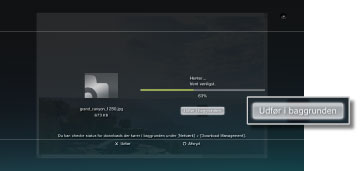
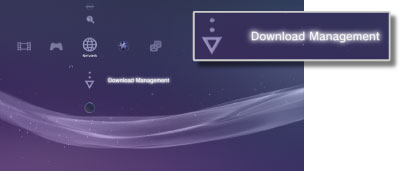

Netværk > Download i baggrunden
Download i baggrunden
Download i baggrunden er en funktion, der gør det muligt at udføre andre handlinger, mens der downloades dateelementer eller store datafiler. Denne funktion er kun tilgængelig, når [Udfør i baggrunden] vises på den aktuelle skærm, mens der downloades.

Tips
- Du kan muligvis ikke udføre download i baggrunden, afhængigt af datatypen eller antallet af dataelementer, der downloades.
- Du skal muligvis udføre en installation for at bruge downloadede data, f.eks. spil eller videofiler. Når downloadingen er udført, vises data, der skal installeres som
 eller
eller  i hver kategori.
i hver kategori. - Download i baggrunden er muligvis ikke tilgængelig, når der findes ikke-installerede data på harddisken.
- Downloadstatussen gemmes, hvis PS3™-systemet slukkes, mens der downloades i baggrunden. Downloadingen genoptages automatisk næste gang, du tænder PS3™-systemet og opretter forbindelse til internettet.
- Download i baggrunden stoppes midlertidigt, når en af følgende handlinger udføres. Downloadingen genoptages automatisk, når handlingen er udført.
- - Når du afspiller en Blu-ray-disk eller DVD.
- - Når du bruger netværksfunktioner til onlinespil.*
- - Når du starter PlayStation®2 formateret software.
- - Når du vælger
 -ikonet (Folding@home™).
-ikonet (Folding@home™). - - Når du bruger tale-/videochat.
- - Når du udfører en systemopdatering.
- - Når du justerer indstillinger under
 (Indstillinger).
(Indstillinger).
*
Download i baggrunden stoppes midlertidigt, når du er ved at lukke spil ned.
Vigtigt
- Nogle titler i din PlayStation®2- eller PlayStation® formateret software afspilles anderledes på et PS3-system end på et PlayStation®2- eller PlayStation®-system, eller måske afspilles de ikke korrekt på PS3™-systemet.
- Ikke alle PS3™-systemer understøtter afspilning af PlayStation®2 formateret software. Yderligere oplysninger findes under [Understøttede disktyper], på SCE-webstedet for dit land/område eller i den dokumentation, der fulgte med dit PS3™-system.
Download Management
Denne indstilling vises kun, når der udføres download i baggrunden. Du kan kontrollere downloadstatussen eller annullere download af data, der downloades fra  (Internetbrowser) eller
(Internetbrowser) eller  (PlayStation®Store). Vælg
(PlayStation®Store). Vælg  (Download Management) under
(Download Management) under  (Netværk).
(Netværk).

Kontrol af downloadstatus
Vælg ikonet for de data, som du vil kontrollere downloadstatus for. Tryk på  -knappen, og vælg derefter [Status] i indstillingsmenuen.
-knappen, og vælg derefter [Status] i indstillingsmenuen.
Annullering af download
Vælg ikonet for de data, som du vil annullere download for. Tryk på -tasten, og vælg derefter [Afbryd] i indstillingsmenuen. Når downloadingen er annulleret, slettes den fra (Download Management).
Pause/genoptagelse af download
Vælg ikonet for den datadownload, som du vil sætte på pause. Tryk på -tasten, og vælg derefter [Pause] i indstillingsmenuen. Tryk igen på -tasten, og vælg [Genoptag] i indstillingsmenuen for at genoptage downloadingen.
Tips
- Hvis en download sættes på pause, vises ikonet
 .
. - Hvis du sætter en download på pause, mens der downloades flere dataelementer, begynder downloadingen af det næste dataelement automatisk.
Alle downloads sættes på pause
Vælg ikonet for en download. Tryk på -tasten, og vælg derefter [Afventer alle] i indstillingsmenuen.
Genoptag alle downloads
Vælg ikonet for en download. Tryk på -tasten, og vælg derefter [Genoptag alle] i indstillingsmenuen.